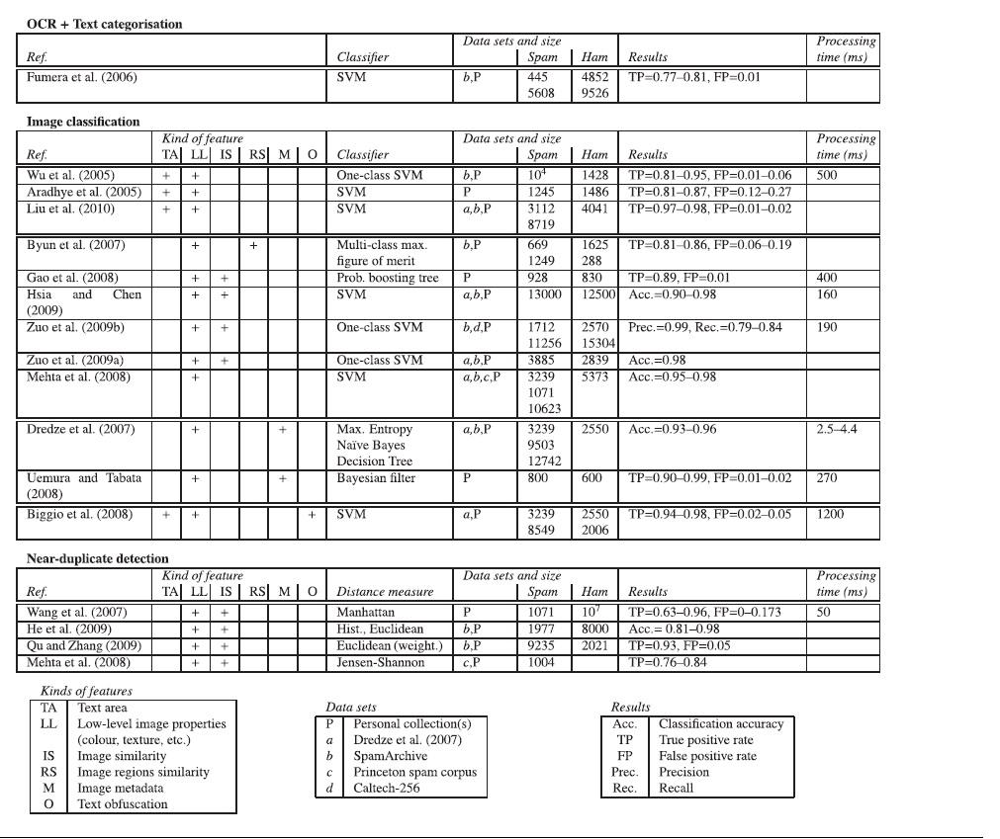
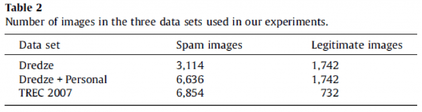
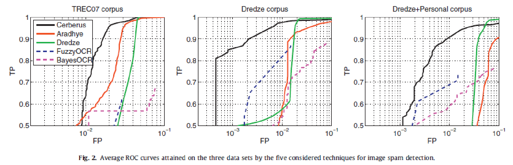
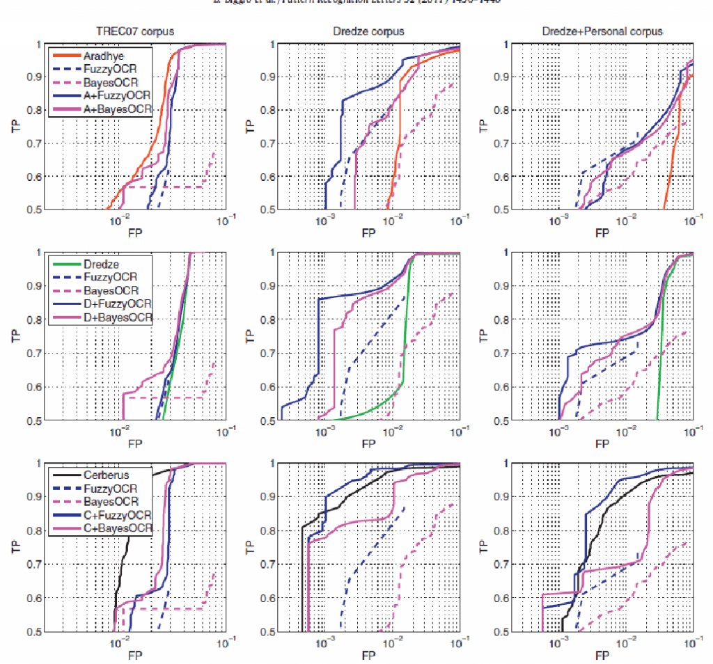

Data publicării: 30.12.2016
Autor articol: Anca Ignat
În articolul “A survey and experimental evaluation of image spam filtering techniques”, scris de Battista Biggio, Giorgio Fumera, Ignazio Pillai, Fabio Roli, autorii evaluează atât pe baza lucrărilor publicate, cât și prin efectuarea unor teste, principalele abordări existente la momentul conceperii materialului (2009-2011) în identificarea mesajelor spam ce folosesc o abordarea utilizată începând cu anii 2005-2006, de obfuscare a conținutului prin încorporarea sa în atașamente de tip image.
Materialul este structurat în 6 părți:
Introducerea explică relevanța subiectului abordat și anume filtrarea pe baza conținutului a documentelor multimedia. Acestea sunt diverse, se găsesc în număr extrem de mare, pot fi accesate de majoritatea dispozitivelor moderne și prezintă diverși factori de risc pentru utilizatori, precum atacuri de tip phishing sau accesul la conținut nepotrivit minorilor. De asemenea, autorii remarcă faptul că rezultatele studiului lor ar putea fi folosite și într-un cadru mai general al problemei filtrării de conținut multimedia, nu doar în combaterea acestui tip de spam.
În cercetarea efectuată se prezintă avantajele, dezavantajele și vulnerabilitățile tehnicilor existente de filtrare antispam în funcție de abordarea lor și de categoriile în care sunt împărțite. Câteva dintre acestea sunt selectate și evaluate pe 3 seturi de date publice, pentru verificarea performanței lor în practică, atât în mod individual, cât și în asocierea cu o altă abordare.
Secțiunea 2 oferă o privire de ansamblu asupra evoluției tehnicilor de filtrare antispam și a mesajelor ce folosesc imagini în conținutul lor.
Aceasta cuprinde definiția unui filtru spam – un software, folosit de ISPs, servere/clienți email, format din module de analiză a diverselor caracteristici ale emailurilor prin intermediul cărora acestea sunt clasificate drept spam sau legitime. Abordările folosite de aceste module, care constau în analiza textuală folosind tehnici de machine learning, analiza de caracteristici specifice emailurilor spam de tipul: forged header, time of delivery și necesită o actualizare frecventă datorită încercărilor constante ale spammerilor de a eluda detecția prin alterarea reprezentării cuvintelor cheie ( scrise greșit intenționat sau folosind caractere similare grafic, dar cu altă semnificație – 0-o, i-l, rn-m, ș.a. ) , inserarea de conținut textual ce pare legitim metodelor de clasificare bazate pe învățare automată.
Mesajele spam ce utilizează imagini sunt generate folosind un șablon comun – în special datorită numărului emailurilor, care nu permite crearea individuală a imaginilor – și modificări aleatoare și / sau diverse obfuscări ale textului prin alterarea caracterelor sau a fundalului pentru evitarea detecției pe bază de semnături sau module OCR – tehnici întâlnite și în cazul imaginilor de tip CAPTCHA.
Secțiunea 3 prezintă tehnicile de detecție analizate, în funcție de categorie:
Bazate pe tehnici OCR (OCR-based): extrag și analizează textul din imagini pe bază de cuvinte-cheie ( folosesc o lista de cuvinte cheie pe care încearcă să le identifice în textul extras din imagini ) sau clasificare de text ( tehnicile de la analiza mesajelor spam de tip textuale aplicate pe textul extras din imagini ). Autorii remarcă faptul că un clasificator antrenat pe date extrase din imagini este mai performant decât unul antrenat pe date extrase din emailuri de tip text, deoarece erorile realizate de sistemele OCR la extragerea textului din imaginile emailurilor se vor regăsi și în datele de antrenament. Din acelasi motiv, cel al erorilor ce pot aparea in faza de extragere a textului, folosirea unui algoritm de tip fuzzy matching este mai eficientă decât încercarea de a găsi o potrivire exactă.
Bazate pe caracteristici low-level ale imaginilor: care pot fi împățite în tehnici de clasificare a imaginilor ( image classification ) pe bază de vectori de caracteristici extrase din acestea sau detectarea imaginilor foarte similare ”aproape-duplicat” ( near-duplicate detection ) prin raportarea la un esantion de diverse tipuri de imagini extrase din emailuri spam.
În secțiunea 5, sunt prezentate vulnerabilitățile acestor tipuri de detecție:
Near-duplicate detection: poate fi eludată prin realizarea de modificări mai severe în imagini relativ la șablonul folosit în generarea lor. Diverse informații sau analiza metricilor folosite în detectarea gradului de similaritate între imagini pot fi de asemenea exploatate.
Tehnicile de clasificare se folosesc de anumite premise pentru a distinge între emailurile legitime și cele de tip spam, iar acestea din urmă pot incorpora diverse caracteristici prin care să fie percepute ca legitime ( modifică distribuția culorilor, modifica metadate pe care se bazează clasificarea, formatul, fundalul – folosind o imagine similară cu bannerele legitime ).
Autorii sugerează combinarea abordării de tip OCR și de clasificare a imaginilor pentru a face mai robustă detecția și prezintă ca argument rezultatele din secțiunea 4 în care s-a obținut o detecție mai bună datorită analizei OCR care a îmbunătățit detecția imaginilor mai puțin obfuscate în combinație cu analiza low-level care a contribuit la o mai precisă clasificare a imaginilor obfuscate.
Concluziile sumarizează tot ce a fost prezentat anterior și reliefează contribuțiile aduse.
Cea mai interesantă parte a articolului „A survey and experimental evaluation of image spam filtering techniques”, scris de Battista Biggio, Giorgio Fumera, Ignazio Pillai, Fabio Roli” constă în evaluarea diverselor metode de detecție pe aceleași seturi de fisiere și compararea timpului de execuție și a metricilor de performanță. Această secțiune va fi dezvoltată și analizată după prezentarea succintă a metodelor cercetate ce către autori.

Tabelul de mai sus prezintă toate metodele din articolele analizate, împreună cu metricile oferite de către acestea. Dintre ele, tehnicile de clasificare a imaginilor folosesc în general SVM (3 dintre ele One-class – antrenate pe spam, una multi-class, restul 2-class). Se distinge Dredze, care folosește o combinație de entropie, clasificare Naive Bayes și arbori de decizie (Decission Trees), iar abordarea lui este puțin diferintă, folosind caracteristici extrase din metadatele imaginilor, mărime, format, image ratio. Aceste caracteristici (numite ”incidental features” ) , care sunt foarte necositisitor de calculat, fac ca acest clasificator să fie foarte rapid. Performanța tuturor acestor metode este imposibil de comparat deoarece sunt evaluate pe seturi diferite de date test și se oferă metrici de performanță diferite de la un articol la altul, iar unele nici nu oferă timpul de execuție. Caracteristicile extrase din imagini diferențiază metodele. Acestea sunt în general mărimea porțiunii de text din imagine, saturația culorilor, proprietățile de generare, cantitatea limitată de textură, raportul dintre numărul de imagini externe și cele atașate la email, numărul de imagini prezente în email, variația culorilor, pentru unele lucrări, pe când altele au preferat caracteristici mai low-level.
Byun et. Al s-au concentrat pe patru proprietăți: caracteristicile culorilor ( distribuție discontinuă, intensitate ridicată, calculate în spațiul HSV), eterogenitatea culorilor ( mai uniforme la imaginile spam ), contract puternic pentru ca imaginile spam să fie foarte vizibile, similaritatea caracteristicilor din diverse regiuni ale aceleiași imagini prin folosirea filtrului log-Gabor.
Gao și Mehta au presupus că majoritatea imaginilor sunt generate artificial și astfel se disting de imaginile obișnuite, mult mai naturale ( de exemplu tip peisaj sau portret ), concentrându-se pe culoare, textură și forme. La fel și Zuo, care ia în calcul transformările aleatoare precum rotație, translație, scalare și zgomot, folosind Fourier-Mellin invariant descriptor, care este invariant față de aceste transformări.
Autorii, în lucrările anterioare s-au concentrat pe identificarea de text obfuscat, prin identificarea caracterelor cu forme neobișnuite, a textului de aceeași culoare cu fundalul și a fundalurilor neuniforme. Aceste caracteristici au fost folosite în clasificare împreună cu altele de tipul celor menționate anterior ( mărime, spect ratio, caracteristici ale culorilor ).
Pentru evaluarea experimentală s-au folosit trei seturi de date din care au fost eliminate emailurile ce nu puteau fi procesate în etapa de feature extraction. Acestea sunt:
1 – Dredze et. al : emailuri colectate de Drezde. Emailurile legitime sunt variate, 30% imagini naturale, 50% imagini cu text, documente scanate, grafică, banere, icons. Din imaginile spam aproximativ 25% sunt obfuscate.
2 – Personale + Drezde: emailuri Drezde împreună cu emailuri colectate de autori în perioada 2004-2007. Imaginile spam sunt foarte variate, colectate pe o perioadă de îndelungată, 15% sunt obfuscate.
3 – TREC: TREC 2007 spam corpus – set public de emailuri spam din diverse conturi, honeypoturi. Multe fișiere legitime din acest set sunt identice / aproape identice și doar 10% au imagini naturale ( imagini fotografiate nealterate, fără text ). Din imaginile spam aproximativ 15% sunt obfuscate.

Ca o observație, din ceea ce am mai studiat în ceea ce privea clasificarea de fișiere malițioase, este preferabilă o distribuție a setului de fișiere de test cât mai similară cu cea întâlnită ”în piață” ( sau ”in the wild” ), astfel că din toate seturile folosite, consider că Drezde este printre cele mai relevante datorită varietății atât a fișierelor spam cât și a celor legitime și a proporției ceva mai ridicate decât în celelalte două de fișiere legitime. Setul TREC 2007, datorită faptului că majoritatea fișierelor legitime sunt similare sau identice, va avea atât problema că unele tipuri de caracteristici vor genera foarte multe alarme false identice, disproporționat față de altele, poate într-un mod artificial / neîntâlnit în mod normal, cât și că multe alte potențiale alarme false nu vor putea fi descoperite datorită lipsei de varietate a fișierelor legitime. De asemenea, consider că un număr de fișiere legitime cât mai variat și poate ceva mai mare decât cel de fișiere tip spam ar putea fi mai relevant în evaluarea rezultatelor, în special a procentului de alarme false, deoarece acest aspect, alături de performanță ( costul și rapiditatea de execuție ) este unul extrem de important în practică. Așa cum subliniau și autorii, în cazul utilizării în practică, ștergerea unui email legitim, potențial important pentru utilizatori sau companie este mult mai costisitor decât nedetectarea unui email spam și trebuie evitat cât se poate de mult.
Autorii au evaluat cinci metode de identificare a imaginilor spam și utilizarea de combinații realizate între acestea. Cele cinci metode sunt:
BayesOCR: Clasificatorul a fost antrenat pe 5168 emailuri din colectate de autori intre ianuarie și iulie 2006 și 3201 emailuri legitime din TREC2006.
FuzzyOCR – modululul din Spam Assasin.
Aradhye: Implementat precum specifica articolul ca SVM cu RBF kernel folosind LibSVM.
Cerberus – modulul din Spam Assasin.
Drezde: Decission Tree implementat cu algoritmul C4.5.
Rezultatele au fost evaluate folosind curbe ROC, 5-fold cross validation. Parametrii au fost setați în așa fel încât să favorizeze o rată cât mai mică a alarmelor false în comparație cu o detecție rezonabil de ridicată.
S-a putut observa că Image Cerberus a surclasat celelalte tehnici mereu cu excepția seturilor Drezde și Personal + Drezde, unde clasificatorul Drezde s-a descurcat mai bine. Drezde și Aradhye au avut uneori performante mai bune decat tehnicile bazate pe OCR pentru aceeasi rată a alarmelor false, care nu puteau clasifica drept spam imaginile fără text.
Dintre tehnicile OCR, FuzzyOCR a avut performanțe mai bune decat BayesOCR. Acesta compensează și erorile apărute în urma extragerii textului din imagini.
Pentru Aradhye presupunerea că textul este predominant în imaginile spam ține, în schimb presupunerea despre saturația intermediară a culorilor imaginilor spam relativ la cele legitime nu a fost validă, dar clusterele de fișiere spam au fost destul de bine separate de cele de fișiere legitime.
Caracteristicile extrase de Drezde au îmbunătățit capacitatea de discriminare a clasificatorului cu caracteristici low-level ale imaginilor și au permis ca rata de TP să crescă cu 0.3 pentru o rată de FP sub 0.05. Astfel Aradhye și Drezde, care au folosit aceleași caracteristici low-level ale imaginilor au avut performanțe oarecum similare pe seturile de date.
Image Cerberus a avut cele mai bune performanțe pentru că distinge mai bine decât celelalte metode imaginile legitime care conțin text și fundaluri mai complexe ( felicitări, facturi, fotografii cu semne de circulație ).
În ceea ce privește timpul de execuție, doar metoda Drezde a avut performanțe utilizabile într-un scenariu real, dar unele dintre celelalte tehnici ar putea avea performanțe mai bune dacă ar fi optimizate. Tehnicile OCR au fost destul de costisitoare: aproximativ 1.5 – 2 secunde pentru fieacare imagine, iar Image Cerberus aproximativ 1.17 secunde. Aradhye a durat cel mai mult – 2.47 secunde.
Având în vedere că cele două tipuri de tehnici evaluate sunt diferite și oarecum complementare, autorii au testat performanța diverselor combinații între acestea. Deși o combinare serială a lor ar fi mai eficientă din punct de vedere a performanței, testele au fost făcute prin rularea lor în paralel și luarea deciziei ca media scorului fiecăruia normalizat în același interval.
Variantele combinate au avut performanțe mai bune decât cele individuale, singurele excepții find Aradhye și Image Cerberus combinate cu una din metodele bazate pe tehnici OCR pe setul de date TREC2007.
Ca observație în legătură cu această excepție, consider că este dată posibil de distribuția imaginilor legitime din setul respectiv (foarte similare sau identice între ele), combinată cu posibilitatea ca subsetul de alarme false pentru tehnicile OCR să fi fost diverit de subsetul de alarme false de la Aradhye și Image Cerberus, ceea ce a generat mai multe alarme false decât utilizarea lor individuală. Aceasta ar explica rezultatele. Mai jos sunt exemplificate grafic rezultatele.


Bibliografie
Biggio, B., Fumera, G., Pillai, I., & Roli, F. (2011). A survey and experimental evaluation of image spam filtering techniques. Pattern Recognition Letters, 32(10), 1436-1446.
Byun, B., Lee, C. H., Webb, S., & Pu, C. (2007, August). A Discriminative Classifier Learning Approach to Image Modeling and Spam Image Identification. In CEAS 2007.
Moskovitch, R., Elovici, Y., & Rokach, L. (2008). Detection of unknown computer worms based on behavioral classification of the host. Computational Statistics & Data Analysis, 52(9), 4544-4566.
Dredze, M., Gevaryahu, R., & Elias-Bachrach, A. (2007, August). Learning Fast Classifiers for Image Spam. In CEAS 2007
Gao, Y., Yang, M., Zhao, X., Pardo, B., Wu, Y., Pappas, T. N., & Choudhary, A. (2008, March). Image spam hunter. In 2008 IEEE International Conference on Acoustics, Speech and Signal Processing (pp. 1765-1768). IEEE.
Lopes, C., Cortez, P., Sousa, P., Rocha, M., & Rio, M. (2011). Symbiotic filtering for spam email detection. Expert Systems with Applications, 38(8), 9365-9372.
Lai, C. C., Wu, C. H., & Tsai, M. C. (2009). Feature selection using particle swarm optimization with application in spam filtering. International Journal of Innovative Computing, Information and Control, 5(2), 423-432.
Biggio, B., Fumera, G., Pillai, I., & Roli, F. (2007, September). Image spam filtering using visual information. In Image Analysis and Processing, 2007. ICIAP 2007. 14th International Conference on (pp. 105-110). IEEE.